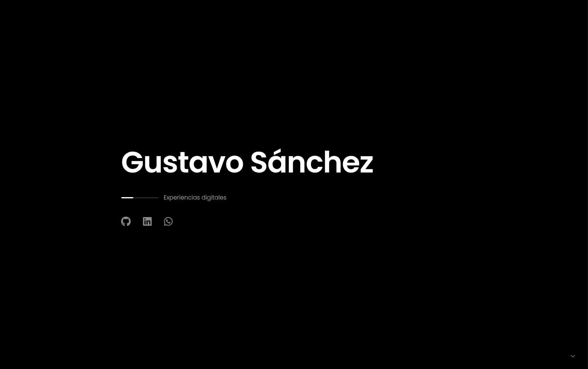
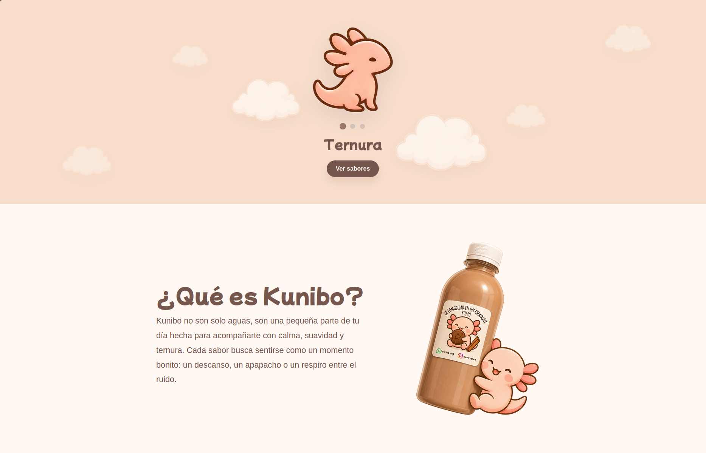
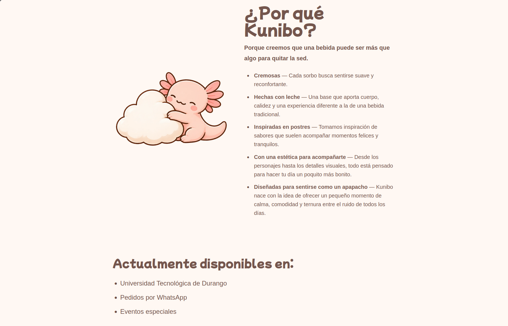
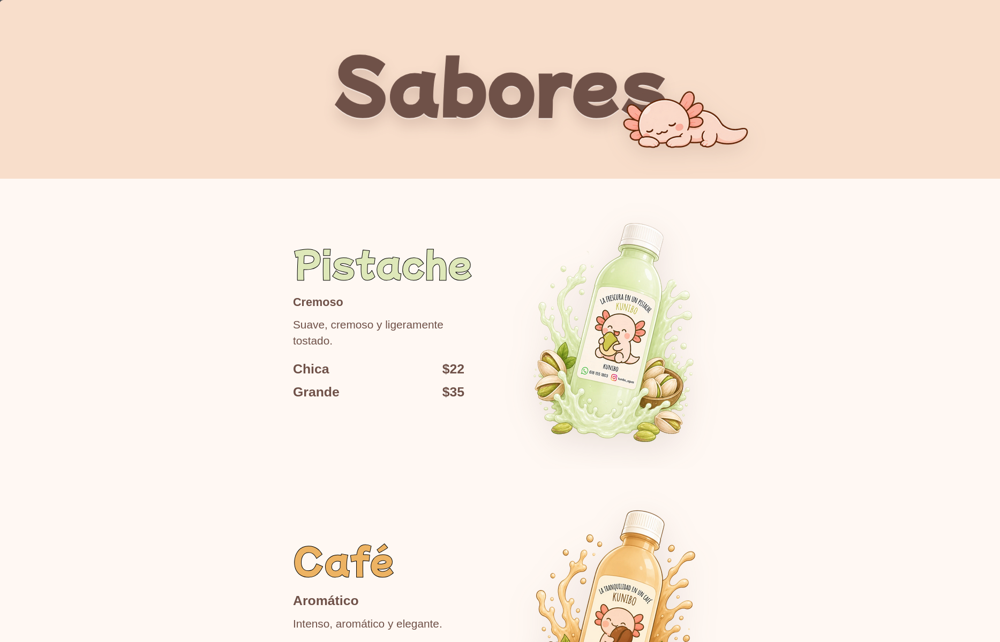
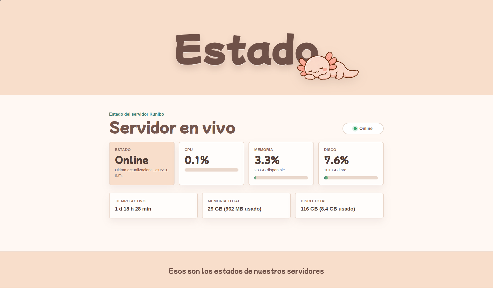
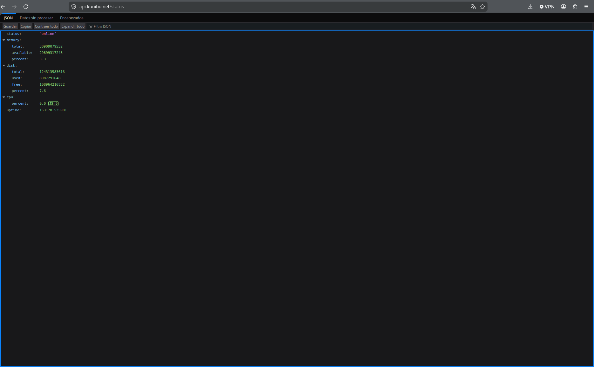

Frontend
HTML
CSS
JavaScript
React
React Native
Soy desarrollador Full Stack con interés en la construcción de aplicaciones web completas, desde la interfaz de usuario hasta la infraestructura donde son desplegadas. Disfruto diseñar experiencias intuitivas, desarrollar APIs, automatizar despliegues y administrar servidores Linux utilizando herramientas modernas como Docker, FastAPI y Cloudflare.
Me interesa construir interfaces que no solo funcionen bien, sino que también transmitan identidad, claridad y experiencia visual. Disfruto combinar Full stack, branding y diseño digital para crear productos con personalidad propia y una experiencia más humana.
Experiencia digital diseñada para networking mediante tarjetas NFC, enfocada en branding personal y diseño minimalista.

Dashboard administrativo enfocado en ventas, gastos y control visual de negocio, desarrollado con Python y CustomTkinter bajo una identidad visual personalizada.


Diseñé y desarrollé el sitio web de Kunibo, una marca conceptual de bebidas inspiradas en postres. El proyecto incluye branding, diseño de interfaz, animaciones personalizadas, desarrollo Full stack con HTML/CSS/JavaScript y despliegue en producción utilizando Cloudflare Pages y dominio propio.



Desarrollé una plataforma de monitoreo para un servidor Ubuntu que expone métricas del sistema mediante una API REST construida con FastAPI. La aplicación fue desplegada utilizando Docker y publicada de forma segura mediante Cloudflare Tunnel, evitando la apertura de puertos en la red doméstica. El frontend consume la API en tiempo real para visualizar el uso de CPU, memoria, almacenamiento y tiempo de actividad.


Laboratorio personal utilizado para experimentar con servidores Linux, Docker, FastAPI, Cloudflare Tunnel y despliegue de aplicaciones. Este entorno sirve como plataforma de aprendizaje para infraestructura, redes y administración de servicios.